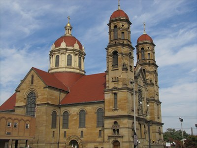

St. Peter Catholic Church
Location: Steubenville, OH
Weekly Events
Mass Times:
Monday
8:00 a.m.
Tuesday
8:00 a.m.
Wednesday
8:00 a.m.
5:15 p.m.
Thursday
8:00 a.m.
Friday
8:00 a.m.
Saturday
8:00 a.m.
4:00 p.m. (Sunday Vigil Mass)
Sunday
8:00 a.m.
10:00 a.m.
12:00 p.m.
Confession Times:
Wednesday
6:30 p.m. - 7:30 p.m.
Saturday
2:00 p.m. - 3:30 p.m.
Eucharistic Exposition:
Perpetual Adoration Chapel
Communal Rosary:
Sunday
9:30 a.m.
Parish Details:
Parish Contact Info:
Email:
office@stpetersteub.com
Phone:
(740) 282-7612
Fax:
(740) 282-9263
Address:
425 North 4th Street Steubenville, OH 43952
Office Hours:
Monday - Thursday
8:30 a.m. - 2:00 p.m.
Parish Staff
Pastor:
Very Reverend Timothy Huffman
Parochial Vicar:
Very Reverend Bradley Greer
Deacon:
Deacon Tom Maedke
Office Administrator:
Monique Sammut
Parish Bulletin
Parish Website
Return to List of Churches